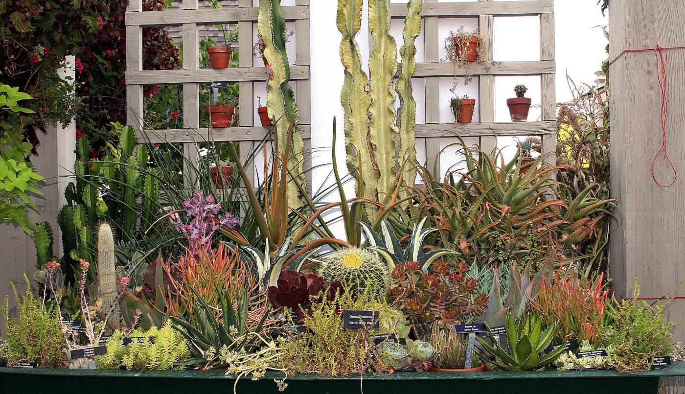

店のこと
ノック式ボールペンの部位の配置図
お店の詳しい情報は準備中です。ここでは、制作側が考えたデザインの考え方を紹介します。


制作側の連想
番号は、部位の番号
ホームの図にある1〜6の番号は、それぞれボールペンの部位の名前に対応します。ノック式ボールペンの部位を図にしたもので、制作側の連想です。お店の理念・由来とは無関係で、実際の製品の仕様を示すものでもありません。
1ノックボタン
軸の上端にある押す部分で、押すたびにペン先が出たり引っこんだりする。
2クリップ
軸の上のほうに付いた留め具で、胸ポケットや紙の端にはさんで使う。
3軸
手で持つ筒の部分で、中に替え芯やバネを収めている。
4バネ
替え芯のまわりに入った小さならせんの部品で、押したあとにもとへ戻す力を生む。
5リフィル(替え芯)
インクを入れた細い管で、先端にペン先がつながっている。
6ペン先
軸の先端にある金属の部分で、中の小さなボールが回って紙に線を引く。
写真(イメージ)
写真(イメージ)




写真はイメージです。お店のものではありません。